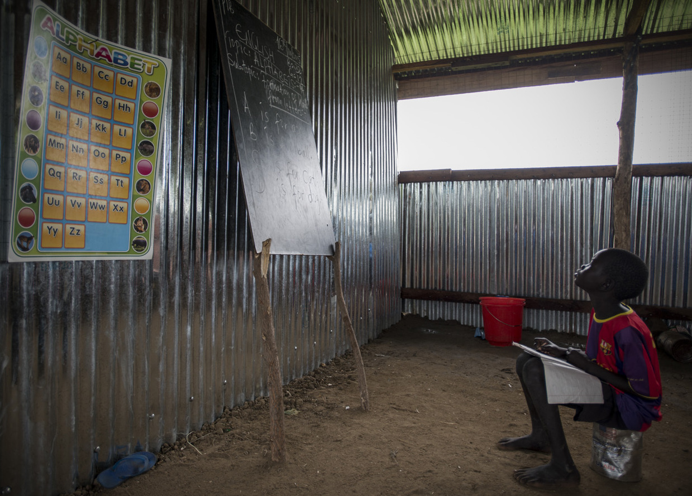
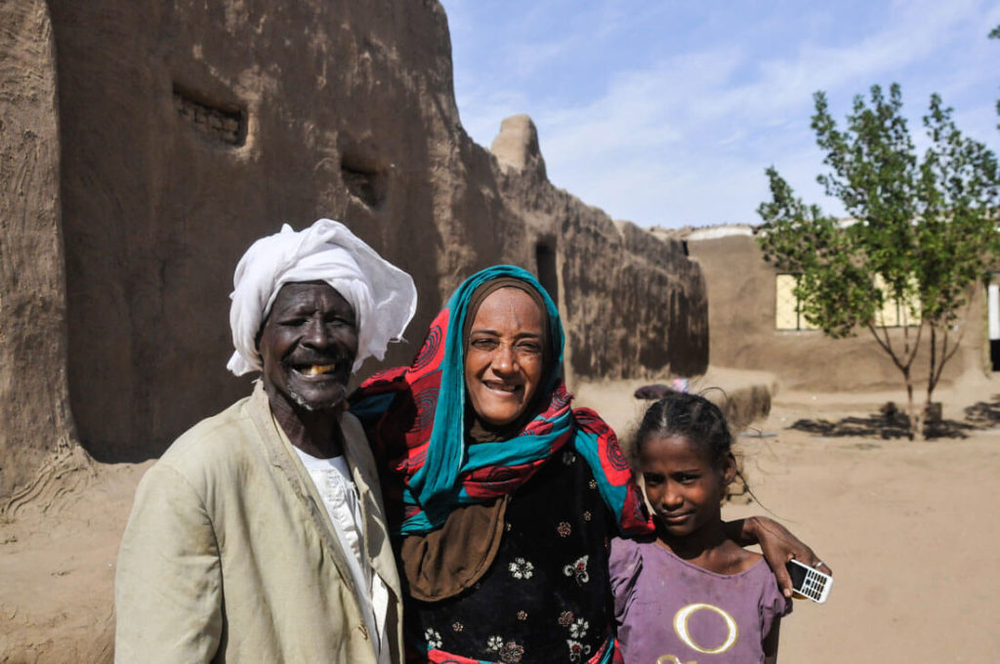
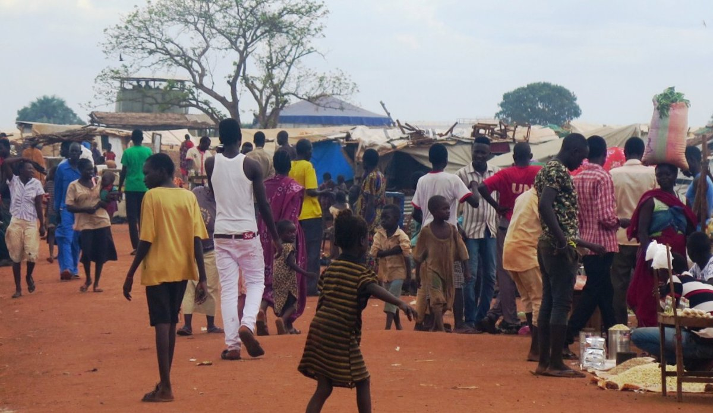
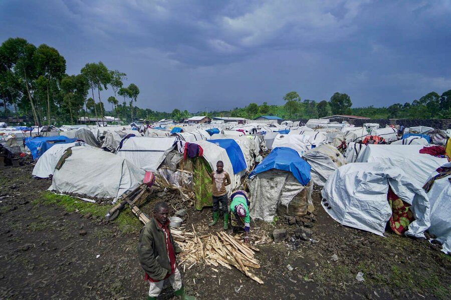
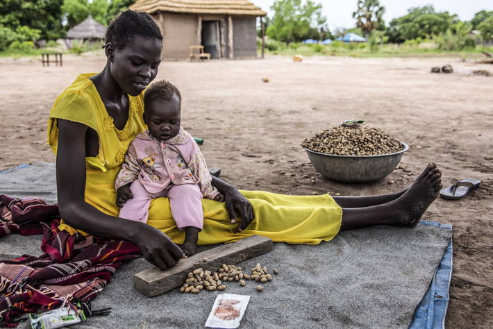
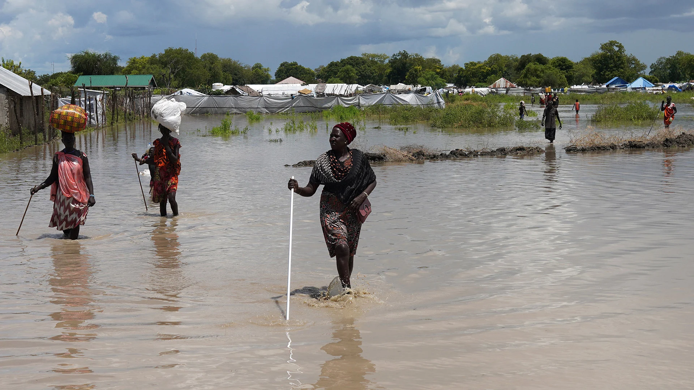
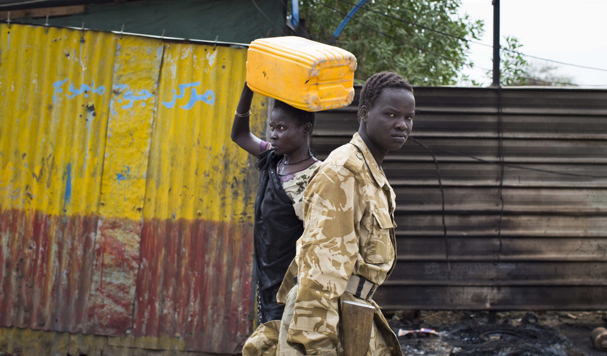
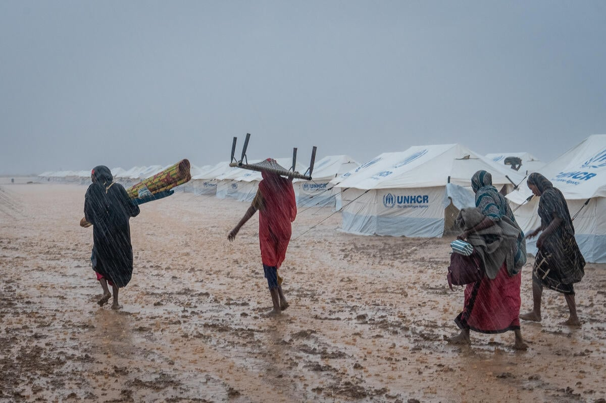

Education
Many migrants move to access better educational opportunities, especially as access to quality education is limited in rural areas. Schools and universities in urban centers attract families seeking improved prospects for their children or themselves.

Economic
Economic migration occurs when individuals or families relocate in search of better employment opportunities or income sources. South Sudan's challenging economic environment, including high unemployment rates and poverty, pushes people to migrate to urban areas or neighboring countries.

Healthcare
Poor healthcare infrastructure in rural areas or conflict-affected zones drives migration to urban centers or neighboring countries where better medical facilities and resources are available.

Family-Related Travel
Migration can also be driven by family reunification, marriage, or other family-related obligations. Individuals often travel to join relatives in safer or more prosperous areas.

Return from Voluntary Travel
Migrants who initially left their homes for reasons such as education, employment, or temporary relocation may choose to return voluntarily after achieving their goals or when conditions improve in their origin area.

Conflict Displacement
Ongoing conflicts in South Sudan force people to flee their homes to escape violence, insecurity, and persecution. Many end up as internally displaced persons (IDPs) or refugees in neighboring countries.

Food Insecurity
Severe food shortages, often due to drought, conflict, or economic instability, drive migration as families move in search of food assistance or better agricultural opportunities.

Disaster Displacement
Natural disasters such as floods, droughts, or locust infestations displace many people in South Sudan. Seasonal rains often lead to floods, forcing communities to migrate to safer areas.

Other
This includes various less common reasons for migration, such as cultural obligations, legal or administrative issues, and personal safety concerns unrelated to conflict or disaster.

Seasonal
Seasonal migration often relates to agricultural activities or pastoralist practices. People move temporarily to access fertile lands, grazing areas for livestock, or seasonal job opportunities during planting or harvest seasons.